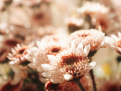
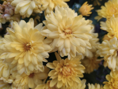

25-60-60")
Сезонные букеты
Каждое время года приносит с собой уникальную палитру цветов и ароматов. Сезонные букеты в Julia's Flowers — это возможность ощутить всю прелесть текущего времени года. Мы тщательно подбираем растения, которые наиболее соответствуют сезону, чтобы каждое ваше обращение к нам становилось настоящим наслаждением для глаз и души. Наши флористы создают композиции, наполненные естественной красотой природы, отражающей характер сезона.
 
Весной мы предлагаем букеты из ярких тюльпанов, нежных нарциссов и первых полевых цветов. Весна — это время пробуждения природы, и наш ассортимент отражает этот процесс: от весёлых и жизнерадостных тюльпанов до утончённых анемонов и первоцветов. Эти букеты дарят веселье и свет, наполняя пространство живой свежестью.
Лето радует разноцветьем ромашек, подсолнухов и пионов. Яркие и сочные букеты, в которых сочетаются разноцветные лепестки и сочные оттенки природы. Ромашки и подсолнухи наполнят ваш дом светом и теплом, а пионовидные розы и пёстрые лилии принесут в любой интерьер атмосферу беззаботного лета.
Осенью наши композиции насыщены хризантемами, георгинами и золотистыми листьями. Осень — это время богатства и умиротворения. Мы предлагаем букеты с глубокими и насыщенными цветами: оранжевыми, бордовыми, золотистыми. Цветочные композиции с хризантемами, георгинами, астерами и засушенными листьями создадут атмосферу уюта и тепла, идеально подходя для домашних интерьеров и подарков близким.
Зимой — это уютные букеты с еловыми ветками, ягодами и шишками. Зима привносит в наши букеты атмосферу праздников и уюта. Мы создаём композиции, наполненные зимними мотивами: хвойные ветви, шишки, ягоды и заснеженные цветы. Такие букеты идеально подходят для новогодних и рождественских подарков, создавая в доме ощущение тепла и волшебства.
Каждый сезонный букет создаётся с учётом актуальных трендов и доступных цветов, поэтому он всегда будет выглядеть свежо и стильно. В Julia's Flowers мы уделяем внимание каждой детали, создавая гармоничные композиции, которые подчеркнут красоту окружающего мира в каждой поре года. Это прекрасный способ подарить частичку природы в любое время года — будь то веселье весны, яркость лета, богатство осени или уют зимы
Сезонные букеты — это не только эстетическое наслаждение, но и возможность прикоснуться к природе, почувствовать её дыхание и использовать её красоту для создания уникальных подарков или оформления интерьера. Приятно осознавать, что такой букет всегда будет наполнен свежестью и живыми эмоциями, отражая дух времени.
Перейти на главную страницу